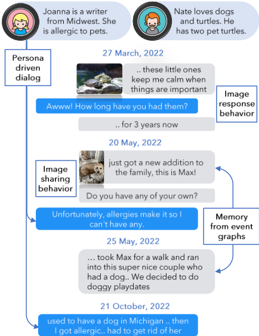
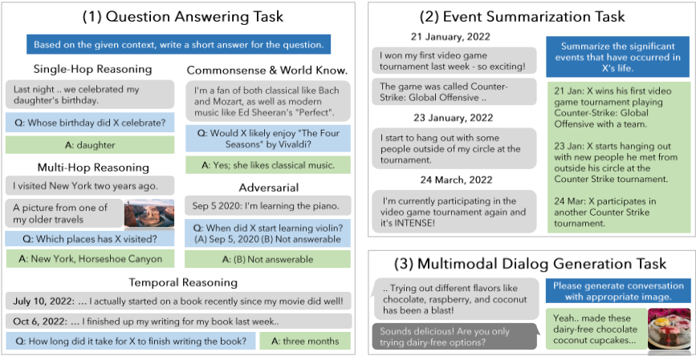
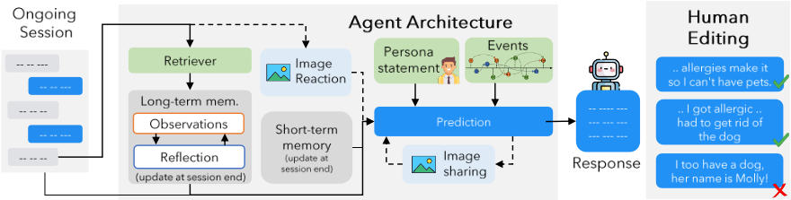
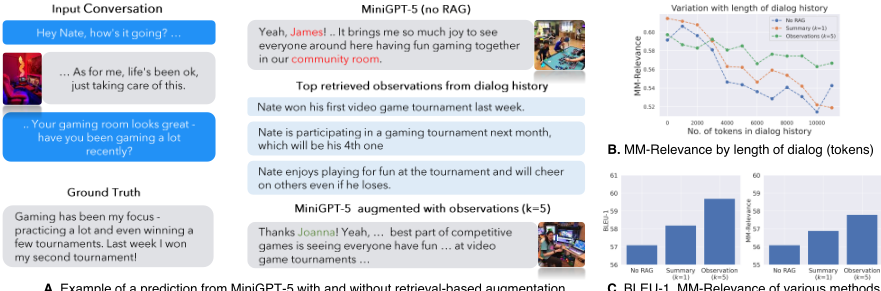
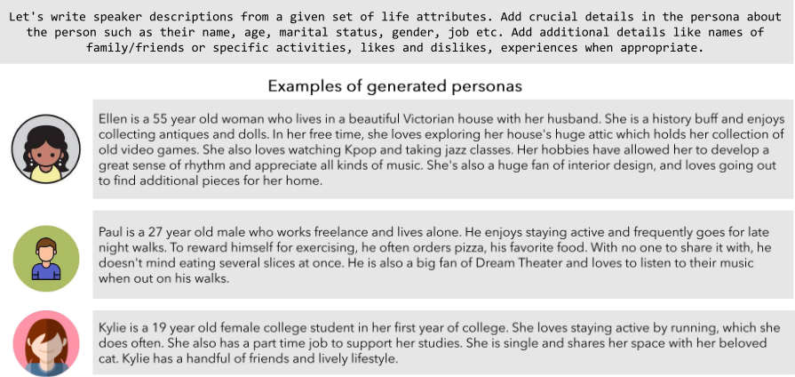
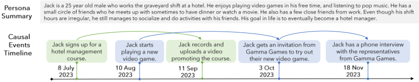
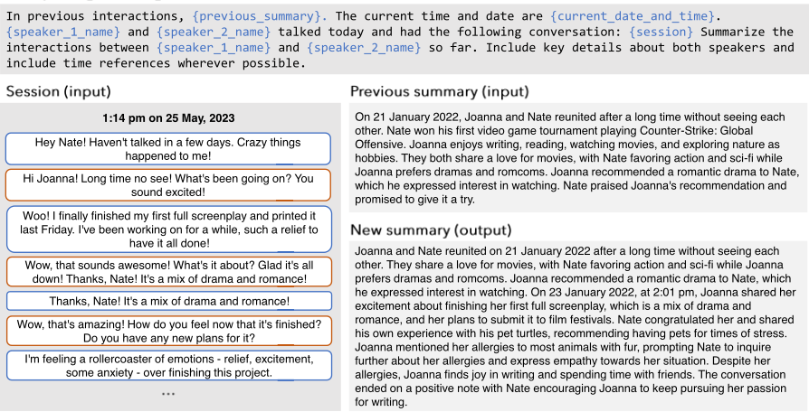
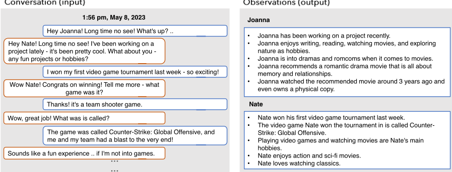
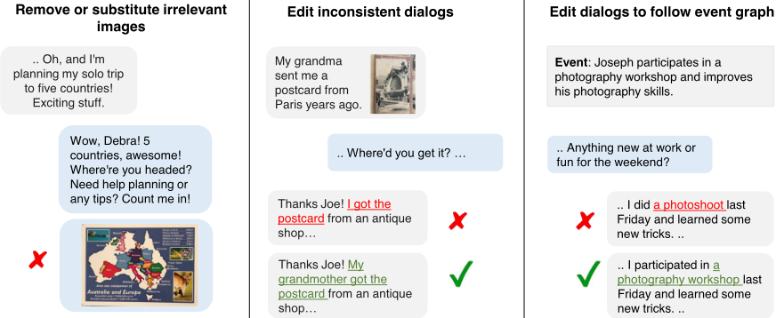

评估 LLM Agent 的超长期对话记忆
论文针对现有长期对话评测最多只覆盖五个会话、长上下文 LLM 与 RAG 在超长对话中的有效性未知的问题，构建了 LOCOMO 数据集与评测基准。方法上采用机器-人工混合流水线：两个基于 generative agents 架构的 LLM Agent 各配独特 persona 与含因果连接的时序事件图，通过 reflect & respond 的短期/长期记忆机制及图像分享行为生成对话，再由人工标注者修正长程不一致，最终得到 50 段平均 300 轮、9K tokens、最多 35 个会话的对话；评测框架包含 QA（五类推理）、事件摘要与多模态对话生成三个任务。关键结论：长上下文 LLM 与 RAG 可将 QA 提升 22-66%，但仍落后人类 56%（时序推理落后 73%）；长上下文模型在对抗性问题上比 base 模型低 83%，事件摘要也不及 base 模型；将对话转为说话人 observations 断言库供 RAG 检索效果最佳，且 top-5 检索优于更多检索，需控制检索上下文信噪比。
现有长期开放域对话研究仅在不超过五个会话（约1K tokens）的有限上下文内评估模型响应，长上下文 LLM 与 RAG 技术在超长对话中的有效性未被探索；同时传统基于词面/语义重叠的评测指标不适合直接评估 Agent 对长期上下文的理解与记忆。
机器-人工混合数据生成流水线 + 三任务评测框架。生成侧：两个 LLM Agent（gpt-3.5-turbo）各配独特 persona 与含因果连接的时序事件图（最多25个事件、跨6-12个月，迭代生成），采用 Park et al. (2023) generative agent 架构实现 reflect & respond 机制（短期记忆为会话摘要、长期记忆为 observations 断言库）与图像分享/图像反应功能；人工标注者编辑约15%对话轮次、替换约19%图像以保证长程一致性。评测侧：QA 任务（单跳/多跳/时序/开放域知识/对抗五类推理，F1 部分匹配）、事件摘要任务（FactScore 原子事实 precision/recall）、多模态对话生成任务（MMRelevance）。实验对比 base LLM、长上下文 LLM 与 RAG（DRAGON 检索器 + gpt-3.5-turbo-16k reader，检索源分别为对话日志、observations、会话摘要）。
QA 任务中 gpt-4-turbo 为最佳模型，总分为 32.4，但显著落后人类基准 87.9
长上下文 LLM 与 RAG 在 QA 上带来 22-66% 的记忆能力提升，但仍落后人类 56%，时序推理落后 73%
长上下文模型在对抗性问题上比 base 模型低 83%；gpt-3.5-turbo-16k 对抗性问题仅 2.1%，而 Llama-2-Chat 为 22.1%、4K 上下文 GPT-4-turbo 为 70.2%
事件摘要任务中长上下文模型不及 base 模型（落后 14%）：gpt-3.5-turbo-16k 相比 gpt-3.5-turbo precision 降 3.0%、recall 降 8.7%
RAG 以 top-5 相关 observations 替代纯对话日志输入时 gpt-3.5-turbo 提升 5%，但检索数量增加后提升消失；会话摘要作为上下文虽召回高但无显著性能提升
人工标注者编辑了近 15% 的对话轮次、移除或替换约 19% 的图像
MiniGPT-5 加入检索 observations 作为上下文训练显著提升 MM-Relevance；对话历史越长分数越低，RAG 可部分缓解
时序推理与开放域知识问题是最具挑战性的 QA 场景
首个针对超长期（平均300轮/9K tokens、最多35个会话）开放域多模态对话的记忆评测研究：提出 persona + 时序事件图 + generative agent 记忆/反思机制 + 人工校验的对话生成流水线；评测框架将 QA 划分为五种推理类型、引入基于 FactScore 原子事实的事件摘要任务，直接衡量长程时序与因果理解而非传统词面/语义重叠指标；并系统对比了 base LLM、长上下文 LLM 与 RAG（对话日志/observations/会话摘要三种检索源）的策略差异。
相关度级别：high
命中能力域：3.1 上下文工程与记忆 | 3.5 评测与可靠使用 | 3.3 Agent 架构与工具使用
理由：直接命中 3.1 上下文工程与记忆（Agent 记忆系统、RAG、长上下文策略、记忆表示选择）与 3.5 评测与可靠使用（长对话记忆评测基准、对抗性问题下的可靠性、长上下文/RAG 策略实证对比），并与 3.3 相关（reflect & respond 的记忆与反思模块设计）。论文给出的核心工程结论——长上下文模型易幻觉且不善于利用其上下文、observations 断言库优于会话摘要作为记忆/RAG 检索源、检索条数需控制信噪比——对团队构建知识库问答、长期会话系统的记忆架构选型与内部评测体系有直接指导价值。
建议动作：深入精读并做内部分享
arXiv:2402.17753v1 [cs.CL] 2024年2月27日
现有的关于长期开放域对话的研究主要聚焦于在不超过五个聊天会话的上下文范围内评估模型响应。尽管长上下文大语言模型（LLM）和检索增强生成（RAG）技术不断进步，但它们在超长期对话中的有效性仍未得到探索。为填补这一研究空白，我们提出了一种机器-人类流水线，通过利用基于 LLM 的 Agent 架构，并将其对话锚定于人物设定和时间事件图，来生成高质量的超长期对话。此外，我们为每个 Agent 赋予了分享图像并对图像作出反应的能力。生成的对话由人工标注者进行验证和编辑，以确保长程一致性以及与事件图的锚定。利用该流水线，我们收集了 LOCOMO——一个超长期对话数据集，其中每段对话平均包含 300 轮对话和 9K 个 token，跨越多达 35 个会话。基于 LOCOMO，我们提出了一个全面的评估基准测试（benchmark），用于衡量模型的长期记忆能力，涵盖问答、事件摘要和多模态对话生成任务。我们的实验结果表明，LLM 在理解冗长对话以及把握对话中的长程时间与因果动态方面存在困难。采用长上下文 LLM 或 RAG 等策略可以带来改进，但这些模型仍大幅落后于人类表现。1
尽管面向扩展上下文、基于大语言模型（LLM）的对话模型近来取得了进展（Bertsch et al., 2024; Xiao et al., 2023），并且集成了检索增强生成（RAG）
1 代码和数据将发布于
https://snap-research.github.io/locomo
† 同等指导。

技术（Shuster et al., 2021; Ram et al., 2023; Shi et al., 2023），但对其在处理超长对话方面的有效性进行透彻评估的需求依然存在。事实上，针对长期开放域对话的研究一直集中于在受限上下文内评估模型响应，例如在五个聊天会话中约 1K 个 token（Xu et al., 2022; Jang et al., 2023; Zhang et al., 2023）。这种长期评估对于改进那些能够记住过往交互中的关键信息、进而生成富有共情、一致且有用回复的有吸引力的聊天机器人至关重要。
| Dataset | Avg. turns per conv. | Avg. sessions per conv. | Avg. tokens per conv. | Time Interval | Multimodal | Collection |
|---|---|---|---|---|---|---|
| MPChat (Ahn et al., 2023) | 2.8 | 1 | 53.3 | - | ✓ | |
| MMDialog (Feng et al., 2023) | 4.6 | 1 | 72.5 | - | ✓ | Social media |
| Daily Dialog (Li et al., 2017) | 7.9 | 1 | 114.7 | - | ✗ | Crowdsourcing |
| SODA (Kim et al., 2023) | 7.6 | 1 | 122.4 | - | ✗ | LLM-generated |
| MSC (Xu et al., 2022) (train; 1-4 sessions) | 53.3 | 4 | 1225.9 | few days | ✗ | Crowdsourcing |
| Conversation Chronicles (Jang et al., 2023) | 58.5 | 5 | 1054.7 | few hours - years | ✗ | LLM-generated |
| LOCOMO (ours) | 304.9 | 19.3 | 9209.2 | few months | ✓ | LLM-gen. + crowdsourc. |
| Dataset | Avg. turns per conv. | Avg. sessions per conv. | Avg. tokens per conv. | Time Interval | Multimodal | Collection |

为此，我们提出了首个针对超长期开放域多模态对话的研究，这些对话高度贴近真实世界的在线交互，并通过一个人机协同流程收集而成：在该流程中，我们首先使用基于 LLM 的生成式 Agent 来生成对话，然后请人工标注者修正对话中任何长期不一致之处。具体而言，基于如下认识——真实世界的对话是集体记忆（Assmann and Czaplicka, 1995; Hirst and Manier, 2008）、个人观点（Hirst et al., 2018）、外部影响（Hirst and Echterhoff, 2012）以及说话者独特人设（persona）（Pruitt and Grudin, 2003; Cooper, 1999; Zhou et al., 2020; Shum et al., 2020）的复杂融合——我们构建了基于 LLM Agent 的超长期对话，其具有以下特征：(1) 独特的人设（§3.1）；(2) 由其生活中因果相互关联的事件构成的时间线（§3.2）；以及 (3) 基于对话历史进行回应的反思与响应（reflect & response）机制（类似于 Park et al. (2023)），以及会发送图片或对图片作出回应的图片分享与图片回应（image sharing & image reaction）行为（§3.3）。最后，人工标注者会修正对话中的长程不一致之处，删除无关图片，并验证对话与事件之间的 grounding（依据性）关系（§3.4）。借助这一流程，我们构建了 LOCOMO——一个包含 50 段超长期对话的数据集，每段对话平均包含 300 轮和 9K 个 token，跨越多达 35 个会话（见图 1 和表 1）。
在开放域对话中评估对话 Agent 的传统方法，是直接基于过去的对话历史来评估 Agent 的响应。这类方法通常采用标准答案（ground truth）与 Agent 响应之间的词汇重叠（Papineni et al., 2002）和语义重叠（Zhang et al., 2019），或者评估 Agent 响应的一致性（Ghazarian et al., 2022）、矛盾性（Nie et al., 2021; Welleck et al., 2019）与共情性（Zhang et al., 2021a, 2022）。然而，这些评估指标并不适合直接评估 Agent 对长期上下文的理解能力。
在本研究中，我们提出了一个整体性的评估框架，用于评估 Agent 在长期上下文中进行管理与响应的熟练程度（见图 2）。首先，Agent 需要正确地“回忆”过去的上下文，以便将相关信息整合到未来的响应中。我们通过问答（QA）任务（§4.1）对其记忆进行了直接考察。我们将问题划分为五种不同的推理类型，以便从多个角度评估记忆能力：单跳、多跳、时序、常识或世界知识以及对抗性。其次，Agent 还需要识别对话中的长程因果与时序关联，以生成富有共情且切题的响应。我们提出通过事件图摘要任务（§4.2）来衡量其对因果与时序的理解能力。在该任务中，与每位大语言模型（LLM）说话者相关联的事件图作为正确答案，模型的任务是从对话历史中提取这些信息。第三，对话式 Agent 需要利用从过去对话中回忆得到的相关上下文，生成与当前叙事保持一致的响应。我们通过多模态对话生成任务（§4.3）来评估这一能力。
我们在 LOCOMO 基准测试上，使用基于指令的 LLM、长上下文 LLM 以及检索增强生成（RAG）技术给出了大量实验结果（§5）。我们的发现包括：
（1）长上下文 LLM 和 RAG 在问答任务中展现出有效性，提升了 LLM 的“记忆”能力（提升幅度介于 22-66% 之间），但仍显著落后于人类水平（落后 56%），在时序推理方面尤为明显（落后 73%）；
（2）长上下文 LLM 在问答任务的对抗性问题上表现出显著困难，其性能比基础模型低 83%。它们尤其容易将对话或事件错误地归给错误的说话者。此外，它们在事件图摘要上表现不佳，落后基础模型 14%，这表明它们可能把握了整个对话中的事实要素，但并未准确理解上下文；以及
（3）RAG 提供了一种均衡的折中方案，将短上下文 LLM 的准确性与宽上下文 LLM 的广泛理解能力相结合，并且当对话被转换为关于每位说话者生活与人设的断言（观察）数据库时，其表现尤为出色。
长期对话。近期的方法包括从一系列先前的对话中检索历史上下文，并按时间顺序对检索到的片段进行推理（Lee et al., 2023b; Lu et al., 2023; Zhong et al., 2023; Liang et al., 2023），和/或使用事件来为对话搭建支架（Jang et al., 2023; Zhang et al., 2023），以实现长期对话的一致性。此类框架存在一些局限性：（1）检索的准确性可能受损，因为检索模型通常是在侧重语义相似性的任务上训练的，而非专门针对此类对话进行训练。此外，真实世界的对话常常包含共指和缺失内容（即回指）（Anantha et al., 2021），这进一步增加了检索过程的复杂性（Mallen et al., 2023; Gao et al., 2023b; Liu et al., 2023）；（2）对检索到的文档进行推理存在挑战，尤其是当模型难以从检索到的数据中识别出正确上下文时（Liu et al., 2024）；（3）对时间间隔进行推理也存在挑战。例如，系统对过去事件作出回应的方式可能因自上次对话以来所经过时间的长短而有所不同（Zhang et al., 2023; Jang et al., 2023）。因此，必须具备相当长度的对话以及一个系统性的评估框架，才能准确评估长期对话生成方法的有效性。我们设计了一个基于检索增强和事件图的长期对话生成流水线，并提出了一个用于评估长期对话 Agent 的框架。
多模态对话。多模态对话主要包括两类任务：基于图像的对话（image-grounded dialogue）和图像共享对话（image-sharing dialogue）。基于图像的对话任务以回答问题为中心（Antol et al., 2015; Das et al., 2017; Kottur et al., 2019），或围绕特定图像创建自然的对话（Mostafazadeh et al., 2017; Shuster et al., 2020; Meng et al., 2020; Zheng et al., 2022）。相反，图像共享对话任务侧重于选择与所提供对话上下文在语义上相匹配的图像（Zang et al., 2021; Feng et al., 2023; Lee et al., 2023c）。我们使用图像共享对话任务中的一种方法来创建多模态对话，随后将其作为基于图像的对话任务进行评估。
合成评估基准测试。面对人类生成数据的短缺，并观察到 LLM 正接近人类水平标注的质量（He et al., 2023; Lee et al., 2023a），受这一进展启发的研究大量涌现。因此，众多研究开始利用 LLM 来扩充或合成大规模对话基准测试，以评估日常社交互动中的回复（Kim et al., 2023）、考察多模态环境中的回复（Feng et al., 2023），以及评价符合特定人设的回复（Jandaghi et al., 2023）。我们利用 LLM 来创建数据，但通过人工验证和编辑来确保其高质量。
我们为 LOCOMO 构建的生成式流水线概览如图 3 所示。我们创建了两个虚拟 Agent，分别命名为 L 1 和 L 2 ，每个 Agent 均以一个大语言模型（LLM）M 进行初始化（即 gpt-3.5-turbo ）。首先，为每个 Agent L i 分配独特的人设陈述 p，以确保将鲜明的个性融入其对话之中（§3.1）。为了反映真实的生活经历，我们为每个 Agent 创建一个时序事件图 G，用以展现符合现实的生活事件序列（§3.2）。每个 Agent L i 均采用 LLM Agent 架构（Park et al., 2023），使其能够有效地记忆对话历史，并将其反思融入正在进行的对话中（§3.3）。此外，每个 Agent L i 还能够分享连贯一致的图像，从而增强了多模态对话这一方面。最后，由人工标注员负责对生成的数据进行手动过滤和精修（§3.4）。
我们从 MSC 数据集（Xu et al., 2022）中选取一段包含 4 至 5 句话的初始人设陈述 p c，并采用 gpt-3.5-turbo 作为 M，将其扩展为完整的人设陈述 p（示例与提示词细节见附录 A.1）。生成的陈述通常包含以下一个或多个要素的细节（Gao et al., 2023a）：目标、过往经历、日常习惯和人际关系，以及该个体的姓名、年龄和性别。
为了利用对话中每个 Agent 的真实生活经历，我们为每个 Agent 构建一个时序事件图（temporal event graph），记为 G。该图 G 由事件 e_i 组成，是通过以指定人设 p 为条件应用 M（即 text-davinci-003）而生成的。每个事件 e_i 都关联一个发生日期 t_i。G 包含因果连接 l = (e_i, e_j)，用于刻画事件 e_i ∈ G 之间的因果关系，并反映个体生活中事件的自然先后顺序。对于每个 G，我们最多创建 25 个事件，分布在 6 至 12 个月的时间范围内，整个过程采用迭代方式进行，在推理时间与时间线中时序和因果连接的连贯性之间取得平衡。首先生成一小批 k = 3 个事件，随后将其迭代地用作输入提示（input prompt），以生成后续的 k 个事件批次。详细内容见附录 A.2。
每个智能体 L i 都融合了生成式智能体架构（Park et al., 2023）中的模块。该智能体具有两个功能：(1) 反思与回应（reflect & respond）；以及 (2) 图像分享与图像反应（image sharing & image reaction）。要求智能体以反思与回应功能为主，并在对话情境中审慎且恰当地运用图像分享与图像反应功能。
反思与回应（Reflect & Respond）。每个智能体进行反思与回应的基本过程涉及短期记忆与长期记忆的概念。在推理过程中，智能体 L i 的回应同时以短期记忆和长期记忆为条件，这类似于人类既记住最近的对话，又能从长期记忆中回忆起经过提炼的重要经历。在每次会话 k 结束后，每个智能体被要求生成一个摘要 w k，随后将其存储到短期记忆 H s 中。该摘要 w k 是通过让 M 以最近的会话对话历史 h k 和前一个摘要 w k - 1 ∈ H l 为条件而生成的。对于会话 k 中的每一轮 j，对话中的单轮内容 h k j 会被转换为一个观察 o k j，然后存储到长期记忆 H l 中。随后，智能体 L i 在日期 t s k +1 的会话 k +1 中生成回应，其依据包括：最新的摘要 w k、基于检索到的相关观察 o ∈ H s 所形成的反思、当前会话中正在进行的对话历史 h k +1，以及人设陈述 p。通过额外地让智能体的回应以 G 中发生在上一次会话与当前会话之间的事件子集（即 { e ∈ G | t s k < t e i < t s k +1 }）为条件，从而在对话中引入长期的时间性叙事。详细内容见附录 A.2.1。

图像分享与图像反应（Image Sharing & Image Reaction）。图像分享与图像反应功能被集成进来，从而为长期对话增添多模态维度。2 当智能体决定发送图像时，会调用图像分享功能。该过程包括：(1) 使用 M 为目标图像生成描述文字 c；(2) 使用 M 将描述文字 c 转换为相关关键词 w；(3) 使用关键词 k 通过网络搜索 WEB ( k ) 3 查找图像；(4) 分享所选图像。相反，图像反应功能则在接收到来自其他智能体的图像时被触发，其包含以下步骤：(1) 为接收到的图像 4 生成描述文字 c；(2) 使用 M 针对接收到的图像生成相应的反应（见附录 A.2.1）。
在最后阶段，人工标注者需要完成以下任务：(1) 编辑对话以消除长期不一致之处；(2) 删除或替换不相关的图像；(3) 核对并编辑事件图与对话内容之间的对齐情况。总体而言，我们观察到标注者编辑了近 15% 的对话轮次，并删除或替换了 LLM 生成数据集中约 19% 的图像。部分编辑示例见附录 A.3。
基于第 3 节中生成的对话，我们引入了一个由三项任务组成的评估基准测试（benchmark，见图 2），用于评估长期记忆的准确性。数据集与评估基准测试的统计信息见附录中的表 5。
2 图像描述也会被保存到长期记忆中。
3 https://pypi.org/project/icrawler/
4 我们使用 BLIP-2 (Li et al., 2023b) 作为图像描述模型。
对话式 Agent 应具备记忆能力，能够记住先前的对话，并据此在未来的对话中生成更具吸引力的回复。为了全面评估这种记忆能力，我们引入了一项问答（question-answering，QA）任务，将其划分为五种不同的推理类别：（1）单跳（Single-hop）问题仅需基于单个会话即可作答；（2）多跳（Multi-hop）问题需要综合来自多个不同会话的信息；（3）时序推理（Temporal reasoning）问题可以通过时序推理以及捕捉对话中与时间相关的数据线索来回答；（4）开放领域知识（Open-domain knowledge）问题可以通过将说话者提供的信息与常识或世界事实等外部知识相结合来回答；（5）对抗性（Adversarial）问题旨在诱使 Agent 给出错误答案，期望 Agent 能够正确识别出这些问题是无法回答的。
对于每个类别，在对预测答案与真实答案（ground truth）均进行规范化处理后，我们计算精确匹配的 F1 分数。然而，使用自动化指标评估长篇答案往往面临挑战（Xu et al., 2023）。大语言模型（LLM）倾向于以各种格式生成经过改写的回复，这使得精确匹配评估变得复杂。为了简化本任务中的评估，我们尽可能确保 QA 标注中的答案直接取自对话内容。我们指示 LLM 在可行的情况下复现对话中的确切措辞，并采用 F1 部分匹配指标来评估预测结果。每个 QA 样本还标注了对话日志中包含答案的轮次 ID（turn ID）。我们报告了检索增强生成（RAG）模型检索正确上下文的准确率。
对话基于时序事件图 G 生成，该图是以人设陈述 p 为条件、由 LLM 构建而成的，反映了个人生活中事件的时间先后顺序。对话 Agent 不仅应理解 G 中的因果联系和事件顺序，还应能按要求复述这些事件。为了评估 Agent 对事件动态的把握程度，我们引入了事件摘要任务，该任务要求 Agent 总结指定时间范围内的事件，并将 Agent 的摘要与 G 中的事件进行比较。LOCOMO 中的事件是密集标注的生活事件列表，由于对话中存在时间性和因果性的共指关系，这些事件难以总结，这与现有的以研究论文（Li et al., 2023a）、电影剧本（Chen et al., 2022）、书籍（Kry´ sci´ nski et al., 2022）、电子邮件（Zhang et al., 2021b）等为摘要对象的基准测试（benchmark）形成对比。
BLEU（Papineni et al., 2002）和 ROGUE（Lin, 2004）等传统指标关注参考摘要与生成摘要之间的词汇相似性，无法满足我们的需求，因为我们强调摘要中的事实准确性。在此背景下，我们采用 FactScore（Min et al., 2023），该方法通过将参考文本和假设文本都分解为原子事实来评估生成文本的事实性。我们对这一指标进行了调整，用以衡量：（1）摘要内容的精确率（precision），即统计内容中与 G 中原子事实相对应的原子事实数量；（2）摘要内容的召回率（recall），即确定 G 的原子事实在内容中被呈现的全面程度。我们报告由计算得到的精确率和召回率导出的 F1 分数。
我们数据集中的对话锚定于特定的人物角色 p 以及为 p 量身定制的相应事件 G。对话中的话题由早期对话中引入的事件演变而来，跨越数周或数月。这种结构使得我们能够评估对话 Agent 能否随时间推移保持连贯的人物角色和连续的叙事。例如，如果说话者最近受了伤，接下来的对话很可能聚焦于其康复过程，而非参与冒险活动。我们通过衡量预测的多模态对话与数据集中真实（ground truth）多模态对话之间的对齐程度来评估这种一致性，并借助 MMRelevance（Feng et al., 2023）以及其他自然语言生成（NLG）指标对这种对齐程度进行量化。
对于问答（question answering）和事件摘要（event summarization）任务，我们将 LOCOMO 中的图像替换为其对应的图像描述（caption）(Li et al., 2023b)，并使用最先进的 LLM 在穿插有图像描述的纯文本对话上进行推理。我们仅在多模态对话生成任务中直接使用图像。更多细节参见附录 C。
问答（Question Answering）。我们评估三类模型：(1) 在受限上下文长度下运行、较早对话被省略的基础 LLM（Base LLMs），即 Mistral-7B (Jiang et al., 2023)、LLama-70B-chat (Touvron et al., 2023)、gpt-3.5-turbo 5 以及 gpt-4-turbo 6；(2) 具有扩展上下文窗口的长上下文 LLM（Long-context LLMs），即 gpt-3.5-turbo-16k；(3) 检索增强生成（Retrieval-Augmented Generation, RAG），即从对话历史数据库、观察记录（关于说话者的断言；参见 §3.3、图 9）或会话级摘要（参见 §3.3、图 8）中检索相关上下文。我们采用 DRAGON (Lin et al., 2023) 作为检索器（retriever），并使用 gpt-3.5-turbo-16k 作为阅读器（reader）。
事件摘要（Event Summarization）。我们使用问答任务中的基础（Base）与长上下文（Long-context）设置进行实验，但不纳入 RAG，因为摘要生成需要对整个对话的全面理解，而不仅仅是检索某个特定部分。我们实现了增量摘要（incremental summarization），即迭代地为前序会话创建摘要，然后以该摘要为基础来总结后续会话 (Chang et al., 2023)。
多模态对话生成（Multi-modal Dialogue Generation）。我们使用自动化流程（未经人工过滤；§3）生成 50 段对话作为训练数据，并训练三个版本的 MiniGPT-5 (Zheng et al., 2023)：(1) Base 仅在先前的对话轮次上训练；(2) + summary 在先前的对话轮次以及当前对话的全局摘要上训练；(3) + observation 在先前的对话轮次以及从对话历史中检索到的观察记录上训练。每次运行均以在 MMDialog (Feng et al., 2023) 上微调的 MiniGPT-5 检查点（checkpoint）进行初始化。
5 https://platform.openai.com/docs/models/gpt-3-5
6 https://platform.openai.com/docs/models/gpt-4-and-gpt4-turbo
| Category. | Model. | Context Length. | Answer Prediction (F1).Single Hop | Answer Prediction (F1).Multi Hop | Answer Prediction (F1).Temporal | Answer Prediction (F1).Open Domain | Answer Prediction (F1).Adversarial | Answer Prediction (F1).Overall |
|---|---|---|---|---|---|---|---|---|
| Human | Human | - | 95.1 | 85.8 | 92.6 | 75.4 | 89.4 | 87.9 |
| Base | Mistral-Instruct-7B | 8K | 10.2 | 12.8 | 16.1 | 19.5 | 17 | 13.9 |
| Base | Llama-2-Chat-70B | 4,096 | 19.7 | 14.4 | 13.3 | 15.9 | 22.1 | 17.9 |
| Base | GPT-3.5-turbo | 4,096 | 29.9 | 23.3 | 17.5 | 29.5 | 12.8 | 22.4 |
| Base | GPT-4-turbo | 4,096 | 23.4 | 23.4 | 10.4 | 24.6 | 70.2 | 32.1 |
| Long context | GPT-3.5-turbo-16K | 4K | 31.7 | 25.4 | 16.8 | 27.6 | 13.1 | 24.1 |
| Long context | 8K | 38.8 | 31.2 | 21 | 35 | 8.4 | 25.2 | |
| Long context | 12K | 51.1 | 40.4 | 25 | 36.5 | 6.4 | 33.5 | |
| Long context | 16K | 56.4 | 42 | 20.3 | 37.2 | 2.1 | 37.8 |
| Category. | Model. | Context Length. | Answer Prediction (F1).Single Hop | Answer Prediction (F1).Multi Hop | Answer Prediction (F1).Temporal | Answer Prediction (F1).Open Domain | Answer Prediction (F1).Adversarial | Answer Prediction (F1).Overall |
| Retrieval Unit | top- k | Answer Prediction (F1 score).Single Hop | Answer Prediction (F1 score).Multi Hop | Answer Prediction (F1 score).Temporal | Answer Prediction (F1 score).Open Domain | Answer Prediction (F1 score).Adver- -sarial | Answer Prediction (F1 score).Overall | Recall Accuracy (R@ k ).Single Hop | Recall Accuracy (R@ k ).Multi Hop | Recall Accuracy (R@ k ).Temporal | Recall Accuracy (R@ k ).Open Domain | Recall Accuracy (R@ k ).Adver- -sarial | Recall Accuracy (R@ k ).Overall |
|---|---|---|---|---|---|---|---|---|---|---|---|---|---|
| None | - | 29.9 | 23.3 | 17.5 | 29.5 | 12.8 | 22.4 | - | - | - | - | - | - |
| Dialog | 5 | 42.9 | 19.4 | 21.3 | 35.8 | 31.9 | 31.7 | 66.2 | 34.4 | 89.2 | 38.5 | 45.7 | 58.8 |
| Dialog | 10 | 46.3 | 26.8 | 24.8 | 37.5 | 29.8 | 34.6 | 72.8 | 247.4 | 97.3 | 53.8 | 54.3 | 67.5 |
| Dialog | 25 | 48.1 | 36.1 | 26.2 | 43.4 | 23.4 | 35.8 | 87.5 | 64.1 | 97.3 | 67.9 | 69.1 | 79.9 |
| Dialog | 50 | 50.9 | 37.2 | 24.6 | 38.3 | 17 | 34.8 | 90.4 | 75.5 | 97.3 | 67.9 | 77.7 | 84.8 |
| Observation | 5 | 44.3 | 30.6 | 41.9 | 40.2 | 44.7 | 41.4 | 52.9 | 40.1 | 81.1 | 38.5 | 29.8 | 49.6 |
| Observation | 10 | 42.2 | 30.5 | 42.1 | 41.9 | 36.2 | 38.8 | 57.4 | 53.1 | 83.8 | 46.2 | 41.5 | 57.1 |
| Observation | 25 | 44.6 | 33.2 | 41.8 | 41.9 | 27.7 | 38 | 71.3 | 63.8 | 83.8 | 66.7 | 45.7 | 66.0 |
| Observation | 50 | 44 | 34.5 | 41.1 | 41.9 | 27.7 | 37.8 | 72.8 | 73.2 | 83.8 | 74.4 | 56.4 | 71.1 |
| Summary | 2 | 34.6 | 15.7 | 26.9 | 26.5 | 36.2 | 29.9 | 68.4 | 39.6 | 56.8 | 50.0 | 73.4 | 61.5 |
| Summary | 5 | 36.6 | 16.6 | 31 | 34.7 | 38.3 | 32.5 | 81.6 | 57.0 | 70.3 | 60.3 | 86.2 | 75.1 |
| Summary | 10 | 34.5 | 14.7 | 29.3 | 31.6 | 40.4 | 31.5 | 93.4 | 82.3 | 91.9 | 80.8 | 94.7 | 90.7 |
| Retrieval Unit | top- k | Answer Prediction (F1 score).Single Hop | Answer Prediction (F1 score).Multi Hop | Answer Prediction (F1 score).Temporal | Answer Prediction (F1 score).Open Domain | Answer Prediction (F1 score).Adver- -sarial | Answer Prediction (F1 score).Overall | Recall Accuracy (R@ k ).Single Hop | Recall Accuracy (R@ k ).Multi Hop | Recall Accuracy (R@ k ).Temporal | Recall Accuracy (R@ k ).Open Domain | Recall Accuracy (R@ k ).Adver- -sarial | Recall Accuracy (R@ k ).Overall |
我们评估并分析了所有基线方法在问答（§6.1）、事件图摘要（§6.2）和多模态对话生成（§6.3）方面的综合性能。
表 2 和表 3 展示了问答任务的性能结果。我们发现：(1) 上下文长度受限的大语言模型（LLM）由于上下文窗口被截断，在理解极长对话时面临挑战。尽管 gpt-4-turbo 以 32.4 的总分成为表现最佳的模型，但它明显落后于 87.9 的人类基准水平；(2) 长上下文 LLM 能够理解更长的叙事内容，但容易产生幻觉。gpt-3.5-turbo-16k 的表现优于其他方法，但其在对抗性问题上的性能骤降至仅 2.1%，相比之下，使用 Llama-2-Chat 时为 22.1%，而使用具有 4K 上下文窗口的 GPT-4-turbo 时为 70.2%。这表明，当 LLM 面对长上下文时，很容易被误导而生成幻觉；(3) 当对话以观察记录的形式存储时，检索增强生成（RAG）是有效的。当输入为最相关的 5 条观察记录而非纯对话日志时，gpt-3.5-turbo 获得了明显的 5% 提升。随着检索到的观察记录数量的增加，这一提升有所减弱，这表明，降低检索上下文中的信噪比（SNR）对于模型准确利用上下文非常重要。相反，尽管召回准确率很高 7，但使用会话摘要作为上下文并未显著提升性能，这可能是由于对话转换为摘要的过程中发生了信息损失。
一个有趣的发现是，时间推理和开放领域知识问题是最具挑战性的场景。
7 对于基于摘要的 RAG 模型，召回准确率基于对相关会话摘要的检索。
| Category. | Model. | Context Length. | ROGUE.ROGUE-1 | ROGUE.ROGUE-2 | ROGUE.ROGUE-L | FactScore.Precision | FactScore.Recall | FactScore.F1 |
|---|---|---|---|---|---|---|---|---|
| Base | Mistral-Instruct-7B | 8K | 29.4 | 7.2 | 14.1 | 27.1 | 19.8 | 23 |
| Base | Llama-2-Chat-70B | 4,096 | 28.1 | 9.3 | 14.8 | 36.3 | 22.7 | 28.3 |
| Base | GPT-4-turbo | 4,096 | 38.8 | 11.4 | 20.6 | 51.6 | 41.8 | 45.1 |
| Base | GPT-3.5-turbo | 4,096 | 41.1 | 13.5 | 20.9 | 45.3 | 46.5 | 45.9 |
| Long context | GPT-3.5-turbo-16K | 16K | 36.2 | 8.5 | 16.4 | 42.3 | 37.8 | 39.9 |
| Category. | Model. | Context Length. | ROGUE.ROGUE-1 | ROGUE.ROGUE-2 | ROGUE.ROGUE-L | FactScore.Precision | FactScore.Recall | FactScore.F1 |

C. 各种方法的 BLEU-1 与 MM-Relevance
A. MiniGPT-5 在有和无基于检索的增强情况下的预测示例
表 4 展示了事件摘要任务的结果。使用 gpt-3.5-turbo 进行增量摘要在召回率和 F1 分数上均取得了最高性能。虽然 gpt-4-turbo 的精确率比 gpt-3.5-turbo 提高了 5.3%，但其在召回率方面的表现则不尽如人意。事件摘要任务需要长程依赖来理解说话者在多个会话中所讨论事件之间的时序与因果联系（见图 7）。与预期相反，长上下文模型并未超越基础模型，尽管其凭借更大的上下文窗口具备了长程推理的能力。与拥有 4K 上下文窗口的 gpt-3.5-turbo 相比，gpt-3.5-turbo-16k 的精确率（下降 3.0%）和召回率（下降 8.7%）均出现下滑。这表明长上下文模型可能并不擅长恰当地利用其上下文，这与 Li 等人（2023a）的类似发现以及 LOCOMO 中问答（QA）任务的结果相一致。就 ROUGE 和 FactScore 两项指标而言，商业模型（gpt-4-turbo、gpt-3.5-turbo）显著优于其开源同类模型。尽管如此，该任务的性能仍有相当大的提升空间。
通过对预测摘要的人工分析，我们归纳出大语言模型（LLM）在事件摘要中所犯错误的五大类别：（1）事件中的信息缺失，原因是模型未能在冗长对话中建立时序和/或因果联系；（2）幻觉，即模型添加了对话中并不存在的额外细节，或添加了同一会话中属于其他事件的细节；（3）因误解对话线索（如幽默或讽刺）而产生的错误，这是对话理解中一个特有的问题；（4）说话者归属不准确；以及（5）将无关紧要的对话错误地视为显著事件。示例见附录中的表 7。
图 4 展示了各种 MiniGPT-5 训练变体在多模态对话生成中的有效性。将上下文纳入训练能够提升性能，其中将观测内容作为上下文纳入训练可带来显著改善的结果。例如，在图 4A 中，检索到的观测内容包含有关说话者参加电子游戏锦标赛经历的信息，这使得模型预测出的对话和图像更加忠实于说话者的人设。这一观察结果也与此前问答（QA）任务中的发现相一致（见表 3）。此外，我们观察到，随着对话历史长度的增加，MM-Relevance 分数会下降（见图 4B）。检索增强生成（RAG）在一定程度上缓解了 MM-Relevance 分数的下降。
我们开发了一条人机协同流水线，用于收集 LOCOMO——一个包含 50 段高质量超长对话的数据集，每段对话平均包含 300 轮对话和 9K 个 token，跨越多达 35 个会话；并提出一个由三项任务组成的评估框架，用于评估模型在长对话中的熟练程度。我们的实验表明，大语言模型（LLM）难以理解对话中的长期叙事，也无法在说话者所讨论的事件之间建立时间与因果联系。
人机混合生成数据。我们的数据集主要来源于由 LLM 生成的文本。我们采用这一方法——该方法已迅速成为耗时费力的人工数据收集的一种流行替代方案（Kim et al., 2023; Jang et al., 2023）——以避免大规模收集超长期真实对话所带来的组织与法律层面的复杂问题。我们通过让人工标注者对生成的对话进行验证和编辑，尽可能确保数据集贴近真实世界的交互。然而，我们承认该数据集可能无法完全反映真实在线对话中的细微差别。
由于我们数据集中的图像来源于互联网，它们并不具备个人照片中通常呈现的视觉长期一致性（例如外貌、家庭环境、人物和宠物等）。因此，我们发现，除了需要光学字符识别（OCR）的情形之外，数据集中的图像可以用其文字描述来替换，而不会损失太多信息。尽管如此，我们的工作仍是迈向超长期对话多模态方面研究的第一步。
语言。我们基于 LLM 的长期对话生成流程仅针对英语开发。不过，只需使用一种精通目标语言的 LLM，并对我们的提示进行适当翻译，该流程便可适用于任何其他语言。
闭源 LLM。我们在对话生成流程中使用最先进的 LLM，以创建尽可能逼真的对话数据集。遗憾的是，这意味着需要采用通过付费 API 获取的最强商业 LLM，这与许多同样生成合成对话的并行工作类似（Zhong et al., 2023; Lu et al., 2023）。我们将公开生成流程的代码，希望未来它能与最先进的开源 LLM 有效地协同工作。
长文本自然语言生成（NLG）的评估。即使被提示用简短短语作答，LLM 也容易生成冗长的回答。这给评估 LLM 所提供答案的正确性带来了挑战，这一点已在 NLP 文献中被广泛记录（Chang et al., 2023; Xu et al., 2023; Krishna et al., 2023）。当我们的评估框架用于 LLM 实验时，同样面临这些挑战。
我们采用并改进了 Park et al. (2023) 中提出的生成式 Agent 框架，用于生成长期对话。因此，Park et al. (2023) 所概述的生成式 Agent 的伦理问题同样适用于我们的工作，尤其是因为我们框架的目标是使对话尽可能逼真。
具体而言，得益于我们框架中的时序事件图，对话 Agent 能够扮演拥有逼真生活的人类，这带来了这样的风险：用户可能会与此类 Agent 形成准社会关系（parasocial relationships），进而对其生活产生不利影响。我们建议，凡是在实际部署我们工作中提到的生成式框架时，都应始终预先附上关于对话来源的免责声明。
其次，使用多模态 LLM（Zheng et al., 2023）基于对话生成图像可能导致错误信息和社会偏见的传播，尤其是当对话 Agent 可能被诱导去鹦鹉学舌般地复述虚假信息或危险观点时。
第三，用生成式 Agent 来替代真实人类以完成某个流程是很有诱惑力的，尤其是在为特定目标而与真实人类合作存在重大挑战的情况下，例如收集人类之间长达一年或更长时间的真实世界交互。必须谨慎行事，确保在那些研究结果可能被用于做出对人类产生实际影响的现实世界决策的研究中，不进行此类替代。我们的工作仅仅是一项关于模型在超长期对话中理解能力的研究。我们不会基于本研究对现实世界政策提出任何建议，并建议我们框架的潜在用户也避免提出此类建议。
附录的组织结构如下：
A 节：LOCOMO 数据集生成流程的详细信息。
B 节：LOCOMO 数据集的统计信息、数据发布许可及标注者详情。
C 节：实验设置与实现细节。
D 节：在 LOCOMO 基准测试（benchmark）上进行评估的额外结果。
我们为每个 Agent L_i 分配唯一的人格陈述 p。为此，我们从 MSC 数据集（Xu et al., 2022）中选取了一系列初始人格陈述 p_c，每条包含 4 至 5 个句子。我们采用 gpt-3.5-turbo 作为 M，并以所选的陈述 p_c 为条件，将其扩展为完整的人格陈述 p。用于将 MSC 数据集（Xu et al., 2022）中的简短说话者属性列表转换为完整人格摘要的提示（prompt）如图 5 所示。我们还在提示中附带了一个“说话者属性 → 人格摘要”的单一示例，作为上下文示例（in-context demonstration）。图 5 中展示了少量人格示例，体现了 LOCOMO 数据集中说话者的多样性。
如第 3.2 节所述，我们采用一种迭代过程，基于给定的人格摘要生成由因果关联事件构成的事件图。用于描述事件图的构成、事件的性质以及事件之间因果联系的基础提示（prompt）如图 6 所示。首先，将基础提示与用于事件图初始化的提示结合使用，生成与给定人格相关的三个独立事件。随后，将基础提示与用于迭代生成事件的提示相结合，继续生成由图中已有事件中的一个或多个事件所引发的事件。图 7 展示了一个人格示例及其对应的时序事件图。在该示例中，Jack 渴望成为一名酒店经理。因此，他在七月份报名参加了一门酒店管理课程，三个月后，他在社交媒体上表达了自己对这门课程的兴奋之情。类似地，他对游戏的热情使他收到了一家知名游戏公司的邀请。
提示

人工标注者被指示在以下场景中对大语言模型（LLM）生成的对话进行编辑：
事件图生成的基础提示词
让我们根据对一个人性格的简短总结，编写一个表示其生活中所发生事件的图。节点表示事件，边表示过去的子事件对当前事件的影响。- 该图以 json 列表的形式表示。- 每个条目是一个字典，包含以下键："event"、"date"、"caused_by"、"id"。- "event" 字段包含事件的简短描述。- "date" 字段包含一个日期。- "id" 字段包含该事件的唯一标识符。- "caused_by" 字段表示边，是导致该事件的已有事件的 "id" 列表。"caused_by" 字段中的事件应发生在其所导致事件之前的日期。尽可能多地生成因果连接。- 因果效应的一个例子是事件“开垦了一个菜园”导致“收获了西红柿”。- 事件可以是积极或消极的生活事件。
事件图初始化的附加提示词
对于以下输入的性格，生成与其性格相符的三个独立事件 E1、E2 和 E3。事件可以是积极或消极的生活事件，并且应反映该个体在人际关系、心理状态、性格等方面的演变。
因果事件迭代生成的附加提示词
对于以下输入的性格，生成由一个或多个已有（EXISTING）事件所导致的新事件。事件可以是积极或消极的生活事件，并且应反映该个体在人际关系、心理状态、性格等方面的演变。不要重复已有的子事件。以一个方括号开始并结束你的回答。

时间
参见图 11 中的一些编辑示例。
LOCOMO 数据集中对话统计数据的细分情况见表 5 的上半部分。此外，评估基准测试（benchmark）中标注统计数据的细分情况见表 5 的下半部分。
LOCOMO 数据集将以 CC BY-NC 4.0 DEED 许可证发布。8
参与 LOCOMO 数据集标注工作的标注员均为内部标注员，由于此类信息具有保密性质，我们无法获取其人口统计学信息。
The conversations in the LOCOMO dataset are composed of natural language dialogs and images that require higher-order reasoning and multimodal coreference resolution, respectively. From initial studies, we observed that multimodal coreference Prompt for generating summaries resolution can be performed effectively by replacing images in LOCOMO with their captions generated using BLIP-2 (Li et al., 2023b), and using state-of-art LLMs to reason over natural language text interleaved with image captions. Hence, our experiments for the question answering and event summarization tasks are conducted using LLMs. We use the images directly only for experiments on the multimodal dialog generation task.
8 https://creativecommons.org/licenses/by-nc/4. 0/

| Conversation Statistics | # Counts |
|---|---|
| Total. # conversations h . | 50 |
| Avg. # sessions k . in conversation h | 19.3 |
| Avg. # turns j . in session k | 15.8 |
| Avg. # tokens. conversation h | 9,209.2 |
| Avg. # tokens. dialogue h k j of turn j in session k | 30.2 |
| Avg. # tokens. observation o k j of turn j in session | k 18.2 |
| Avg. # tokens. summary w k of session k | 127.4 |
| QA Benchmark Statistics | |
| # questions. single-hop retrieval | 2,705 (36%) |
| # questions. multi-hop retrieval | 1,104 (14.6%) |
| # questions. temporal reasoning | 1,547 (20.6%) |
| # questions. open domain knowledge | 285 (3.9%) |
| # questions. adversarial | 1,871 (24.9%) |
| Total. # questions. | 7,512 |
| Event Summarization Statistics | |
| Avg. # ground truth events. in conversation h | 24.2 |
| Avg. # tokens. event summary | 896.5 |
| Multi-modal Dialogue Generation Statistics | |
| Avg. # images. in conversation h | 32.3 |
| Conversation Statistics | # Counts |
Question Answering. We carry out experiments using three distinct methodologies: (1) Base involves utilizing LLMs to directly conduct the task within a constrained context. The task description comes after the dialogue history. To accommodate the restricted context window size, earlier dialogues are omitted; (2) Long-context employs LLMs with an extended context window to expose the models to as much dialogue context as possible; (3) Retrieval-augmented Generation (RAG) involves retrieving relevant context from a database of dialog history, observations, or sessionlevel summaries. Observations are assertions about each speaker extracted from the dialog history as described in §3.3, see an example in Figure 9. Session-level summaries are concise summaries of the conversation that takes place in each session, see an example in Figure 8.
For the retrieval model, we employ DRAGON (Lin et al., 2023). In the Base , we utilize Mistral-7B (Jiang et al., 2023), LLama70B-chat (Touvron et al., 2023), gpt-3.5-turbo 9 , and gpt-4-turbo 10 . To assess the effectiveness in practical scenarios for Long-context and RAG , we draw comparisons using variants of Write a concise and short list of all possible OBSERVATIONS about each speaker that can be gathered from the CONVERSATION. Each observation should contain a piece of information about the speaker. The OBSERVATIONS should be objective factual information about the speaker that can be used as a database about them. Avoid abstract observations about the dynamics between the two speakers such as 'speaker is supportive', 'speaker appreciates' etc. Do not leave out any information from the CONVERSATION.
9 https://platform.openai.com/docs/models/gpt-3-5
10 https://platform.openai.com/docs/models/gpt-4-and-gpt4-turbo
Prompt for generating observations

gpt-3.5-turbo。由于不同开源模型之间固有的差异性，以及其在较短上下文上能力可能出现的下降，我们不报告长上下文微调的开源模型（Chen et al., 2023）或采用滑动窗口的模型（Bertsch et al., 2024; Dao et al., 2022）的性能。
事件摘要（Event Summarization）。我们展示了在两种不同配置下进行的实验。我们使用了问答任务中的 Base 和 Long-context 两种设置，但未纳入 RAG，因为摘要生成需要对整个对话的全面理解，而不仅仅是检索特定部分。与问答任务相比，我们方法的一个显著区别在于对上下文的处理方式。具体而言，我们采用一种迭代过程：先为前一个会话创建摘要，然后以该摘要为基础生成后续会话的摘要（Chang et al., 2023）。此外，我们使用一个输入-输出的上下文示例（in-context demonstration）来引导模型在摘要中仅选择重要的人生事件。
多模态对话生成（Multi-modal Dialogue Generation）。为了评估多模态对话生成，我们在 50 段由自动化流水线生成（未经人工过滤）的对话上训练 MiniGPT-5（Zheng et al., 2023），具体细节见 §3。我们开发了三个不同版本的模型，各自使用不同的训练数据：(1) Base 在前序对话轮次上训练；(2) + summary 在前序对话轮次和当前对话的全局摘要上训练；(3) + observation 在前序对话轮次和从对话历史中检索到的相关观察上训练。对于这些模型中的每一个，我们都以在 MMDialog 数据集（Feng et al., 2023）上预训练的 MiniGPT-5 检查点作为起点。
我们使用截至 2024 年 1 月版本的 OpenAI API 和 Huggingface（Wolf et al., 2020），并在评估 LOCOMO 基准测试时具体将 temperature 设置为 0、top p 设置为 1。包括基于检索增强生成（RAG）的模型、MiniGPT5 训练以及推理在内的所有实验，均在 Nvidia A6000 服务器上以 FP32 进行。对于实验中的每个模型，我们均报告单次推理运行的结果。对于 MiniGPT-5，我们采用原始代码库中推荐的超参数，将模型训练了 10 个 epoch，在单块 A6000 GPU 上耗时约 30 小时。
我们在评估协议中使用 BLEU 11 的默认实现、
11 https://www.nltk.org/_modules/nltk/translate/ bleu_score.html
让我们根据用户所分享照片的文字描述来撰写简短的图像搜索查询。查询中不应包含人名、年份及其他无关细节。例如：输入：听起来很惬意啊，Jeremy！至于电子游戏的推荐，你有没有试过“The Legend of Zelda: Breath of the Wild”？这是一款我特别喜爱的开放世界冒险游戏。[分享了一张 Link 站在令人叹为观止的风景前的照片] 快来看看这绝美的景色！输出：the legend of zelda: breath of wild link landscape 输入：{generated_image_caption} 输出：
{speaker_1_persona} {speaker_2_persona} {speaker_1_name} 说道：{current_turn}，并分享了一张 {shared_image_caption_blip2} 的照片。请写出 {speaker_2_name} 在其回复中可以包含的最自然的问题或评论。
| Category | top- k | BLEU-1/2 | Rouge-L | MM-R |
|---|---|---|---|---|
| Base | - | 57.1 / 34.2 | 12.4 | 56.1 |
| + summary | 1 | 58.2 / 34.1 | 12.8 | 56.9 |
| + summary | 2 | 56.5 / 32.8 | 12.1 | 55.1 |
| + summary | 5 | 56.1 / 32.5 | 12 | 55.2 |
| + observation | 5 | 59.7 / 35.1 | 13.6 | 57.8 |
| + observation | 10 | 59.1 / 34.9 | 12.8 | 57.1 |
| + observation | 25 | 58.5 / 34.2 | 12 | 56.5 |
| Category | top- k | BLEU-1/2 | Rouge-L | MM-R |
ROUGE 12、BertScore 13、FactScore 14 指标，均来自各自的 Python 包。
请参见表 7，其中给出了第 6.2 节中概述的 LLM 所犯事件摘要错误五大类别的示例。
在 LOCOMO 基准测试的多模态对话生成任务上，对 MiniGPT-5 模型各版本进行评估的结果见表 6。
12 https://pypi.org/project/rouge/
13 https://pypi.org/project/bert-score/
14 https://github.com/shmsw25/FActScore

| Error Type | Explanation | Ground truth event or relevant dialogs | Predicted event |
|---|---|---|---|
| Missing information | Key details about event are omitted because the model fails to make causal and temporal connections over a long conversation. | Joanna submits her third screenplay on loss, identity, and connection to a film contest | Joanna submits her recent screenplay to a film contest. |
| Hallucination | Non-existent details or details from a different event are padded onto an event | N : 'The gaming party was a great success!' N : '... said they'd want to do it again next month!' N : 'On another note, I made vegan ice cream ...' | Nate's vegan ice cream is a huge success and people want to do it again next month. |
| Misunder- -standing of dialog cues | e.g., model confuses a light-hearted statement from a speaker as a serious statement | J : '.. these trails that made me feel like writing a drama.' N : '.. go together .. Maybe I'll start to think of a drama myself and write a screenplay ...' J : 'Haha, now that would be something! ...' | Nate considers writing his own drama screenplay. |
| Speaker attribution | Event is attributed to the wrong speaker | Nate invites Joanna to try his homemade lactose-free ice cream. | Joanna invites Nate to her home to try her dairy-free ice cream recipe. |
| Saliency | Unimportant interactions in the conversation are considered significant by model | N : Hey Joanna, what's been up since we last chatted? How's it going? | Nate asks Joanna how she has been she they last talked. |
| Error Type | Explanation | Ground truth event or relevant dialogs | Predicted event |